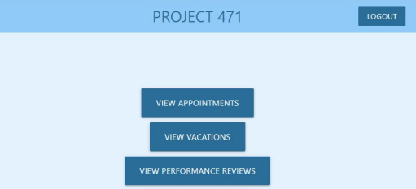

YNOT Digital Website
About the project
-
Was my final project for CPSC 471. I was a in a group of 3 people.
-
A PHP based project implemented to provide a more simplistic management system for the YNOT Digital Printing company for tracking down employees' requests and approving or denying them.
-
Features secure login/signup using hashes and salts.
-
MySQL is used for database management using phpMyAdmin.
-
It is secure against XSS and SQL injections attacks.
-
Incuded the entire process of database design, which includes entitry relation diagrams, relational model diagrams, and normalization and decomposition techniques.

Links